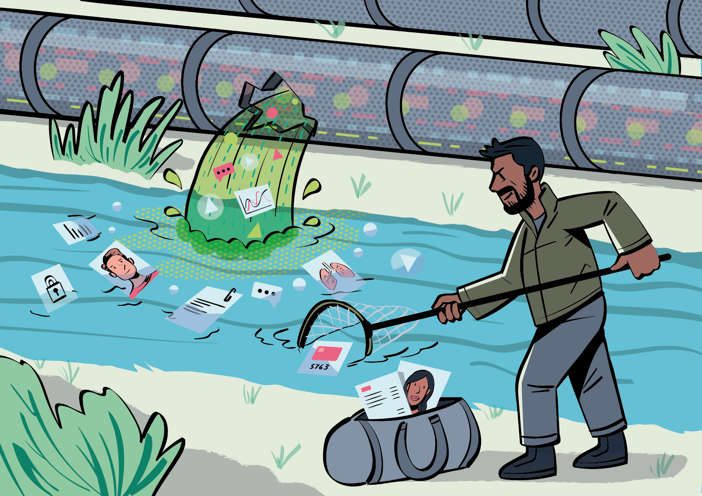

AI Harms¶
After that short introduction into metaethics and normative ethical theories, we will now start thinking about the specific context of artificial intelligence. What considerations are relevant when thinking about the ethics of using AI and data science in our everyday lives?
As we saw in chapter 1, there are many different ways to think about what morality is and where it comes from, and the debate is far from settled (if one believes it ever can be settled in the first place). The question then becomes: how can we talk about AI ethics if we do not have a precise definition of what morality is or what it requires from us?
This is no small barrier. To overcome it, we will draw on two traditions of moral thinking: a) bioethics and b) human rights discourse. Bioethics is the study of the ethical impacts of biomedicine and the applied life sciences. Human rights discourse draws its original inspiration from the UN Declaration of Human Rights. It is anchored in a set of universal principles that build upon the idea that all humans have an equal moral status as bearers of intrinsic human dignity.
Most generally, human rights are the basic rights and freedoms that are possessed by every person in the world from cradle to grave and that preserve and protect the inviolable dignity of each individual regardless of their race, ethnicity, gender, age, sexual orientation, class, religion, disability status, language, nationality, or any other ascribed characteristic. These fundamental rights and freedoms create obligations that bind civil servants and governments to respecting, protecting, and fulfilling human rights. In the absence of the fulfilment of these duties, individuals are entitled to legal remedies that allow for the redress of any human rights violations. Human rights and freedoms, as have been codified in the Human Rights Act (1998) and in the European Convention on Human Rights (1953) can be then applied to the different aspects of an AI or data-driven system.
Whereas bioethics largely stresses the normative values that underlie the safeguarding of individuals in instances where technological practices affect their interests and wellbeing, human rights discourse mainly focuses on the set of social, political, and legal entitlements that are due to all human beings under a universal framework of judicial protection and the rule of law. The main principles of bioethics include respecting the autonomy of the individual, protecting people from harm, looking after the well-being of others, and treating all individuals equitably and justly.
The main tenets of human rights include the entitlement to equal freedom and dignity under the law, the protection of civil, political, and social rights, the universal recognition of personhood, and the right to free and unencumbered participation in the life of the community.
Key Concept: Bioethics and Human Rights in Context
The principles that have emerged from both traditions found their origins in moral claims that have responded directly to tangible, technologically inflicted harms and atrocities. That is, both traditions emerged out of concerted public acts of resistance against violence done to disempowered or vulnerable people. Whereas human rights has its origins in efforts to redress the well-known barbarisms and genocides of the mid-twentieth century, in the case of bioethics, its emergence tracked the public exposure in the 1960s and 1970s of several atrocities of human experimentation (such as the infamous Tuskegee syphilis experiment). In the latter instances, it was discovered that members of vulnerable or marginalised social groups had been subjected to the injurious effects of institutionally run biomedical experiments without having knowledge of or giving consent to their participation.
It is drawing on these points of departure that we now turn to AI and data science ethics. Anchoring the foundation of AI ethics in real-world social injuries has been a useful strategy. It has enabled the scope of the values and ethical concerns that underwrite responsible practices in the design, development and deployment of AI and data- driven systems to be informed by the actual risks posed by their use. In this course we will focus on six main kinds of AI harms.
Abstract
- Loss of autonomy, interpersonal connection, and empathy
- Poor qualities and dangerous outcomes
- Bias, injustice, and discrimination
- Widening global and digital divides
- Breaches in data integrity, privacy and security
- Biospheric harm
1. Loss of autonomy, interpersonal connection, and empathy¶
Automated AI systems with the power to make decisions about people can have potentially dehumanising consequences for those subject to them. Obviously, not all automated decisions are created equal. It is one thing if an automated system decides whether an email should be classified as spam or not, and quite another if an AI is in charge of allocating scarce social services, or deciding who gets hired for a job.
Individuals may feel disempowered in the face of unstoppable automation, especially when these decisions are relevant to their sense of personal autonomy. This feeling can be compounded as well if there are few or no avenues in place to dispute or contest the automated decision.
People may also feel as if they are being "reduced to a statistic" by these systems, or that the use of their personal data violates their privacy. Finally, but no less importantly, automation may also result in a loss of empathy and crucial human connection.
For example, if AI is used to make or assist in making decision which impact people's lives, such as AI-assisted hiring tools there can be a loss of autonomy and interpersonal connection. People might want to know why they were not called to an interview, and knowing that there's no one to ask might be frustrating. Similarly, there is a loss of autonomy if the person does not then have a clear avenue where they can ask about the reasons about why they did not get called, and how they might improve in the future.
2. Poor qualities and dangerous outcomes¶
Algorithmic models are only as good as the data on which they are trained, tested, and validated (commnonly called ‘Garbage in, garbage out’). Inaccuracies, measurement errors, and sampling biases across data collection and recording can taint datasets. Using poor quality data could have grave consequence for individual wellbeing and the public welfare.
This problem exist wherever datasets are used. The question of the quality of a dataset obviously comes in degrees, and it can be more or less dangerous depending on the context in which the data is used. It can also stem from multiple sources. Some can be honest mistakes, like typos or missing data points, while others derive from more profound problems, such as the structural biases that our society has which are then replicated in the datasets. But the main insight remains: as long as the data used for a model is not appropriate and does not accurately represent the underlying phenomenon it is studying, the outcomes of said AI model will not be accurate either.
3. Bias, injustice, and discrimination¶
Supervised machine learning models draw insights (learn) from the existing data patterns on which they are trained. When they are working reliably, they can make accurate, out-of-sample predictions from what they inferred from the training data. However, the problem is that these patterns may not be equitable or fair.
In fact, this is very often not the case, and cases where data is biased, unjust or discriminatory sadly abound. Most (if not all) machine learning models are trained on historial data, and this means that as long as they do, they will be embedded with past and present injustices, forms of discrimination, and multiple biases which the data itself contains. Not only that, the machine learning algorithms will then reproduce, and maybe even amplify said biases.
In day 4 we will look at the various different biases which can creep up in the ML/AI lifecycle. One crucial thing to keep in mind though, is that there is no fairness without awareness. When designing, implementing, and using these systems, conscious awareness of biases and explicit mitigation strategies must be discussed and implemented.
Examples of this kind of harm come from different sectors of society. A 2019 paper published in Science showed how an algorithm used in US healthcare to predict patients' needs was producing racist results.[@obermeyer2019] The bias was introduced because the algorithm used past health costs as a proxy for health needs, which inadvertently favoured White patients. Less money was spent on black patients with the same level of need as their white counterparts, and the algorithm thus falsely concluded that black patients are healthier than equally sick white patients.
Another famous example is Amazon's hiring algorithm which turned out to be biased against women. In an attempt to automate their hiring practices, Amazon developed an experimental hiring tool which used artificial intelligence to give job candidates scores ranging from one to five stars.[@martin2022] The algorithm quickly taught itself to discriminate against women candidates, penalising resumes which included the word women, (in 'women's chess club' for instance), as well as downgrading resumes which came from all-women colleges (ibid). Although the algorithm is not used by the company, (it was actually taken down precisely because of concerns about its sexism[@dastinjeffrey]), it serves as a powerful example of how AI can perpetuate and amplify historical biases (such as learning from the fact that traditionally Amazon has not hired many women, and extrapolating that to mean that women are not good employees).
4. Widening global digital divides¶
The use of AI systems is not distributed uniformally across different countries, or even within regions in the same country. The varying levels of access and use of these technologies can reinforce and amplify already existing digital divides and data inequities. It can also exacerbate exploitative data appropriation from less rich countries and institutions to more well-resourced researchers and companies in richer countries or in better-funded universities within one country.
Long-standing dynamics of global inequality, for instance, may undermine reciprocal sharing between research collaborators from high-income countries (HICs) and those from low-/middle-income countries (LMICs).[@leslie2020a] Given asymmetries in resources, infrastructure, and research capabilities, data sharing between LMICs and HICs, and transnational research collaboration, can lead to inequity and exploitation.[@bezuidenhout2017]-[@leonelli2021]-[@shrum2005] That is, data originators from LMICs may put immense amounts of effort and time into developing useful datasets (and openly share them) only to have their countries excluded from the benefits derived by researchers from HICs who have capitalised on such data in virtue of greater access to digital resources and compute infrastructure.[@worldhealthorganization2022]
In this way, the benefits of data production and research are not necessarily accrued fairly to originating researchers and research subjects, widening the already wide gaps between the more and less advantaged groups of researchers or communities. An example of this is what happened after the Omicron variant of the Sars-Covid-19 virus was first reported in South Africa. Researchers in the country conducted excelent research and were actually quicker in detecting the variant and sequencing its genome than other countries. However, instead of being lauded by the international research community, the country was rewarded with a travel ban from most of the world, even though it was unlikely to be useful (and actually it was later discovered that Omicron had already been present in Europe before it was detected in South Africa). Even though it wasn't the researchers who were punished in this case, the benefits of the research certainly did not get distributed fairly across the globe.[@bbc2021]
These gaps in research resources and capabilities go beyond gaps between HIC's and LMIC's. They can also exist within the same country, between large research universities and technology corporations which are better positioned to advance data research given their access to data and compute infrastructures when compared to less well-resourced universities or institutions.[@ahmed2020]
Another example comes from what is called "parachute research": researchers from the Global North conduct research in the Global South and then go back to their home countries with the data, without necessary regarding the interests of the researchers or data subjects the data was taken from. In a systematic review that examined African authorship proportions in the biomedical literature published between 1980 – 2016 where research was originally done in Africa, scholars found that African researchers are significantly under-represented in the global health community, even when the data originates from Africa.[@mbaye2019]
5. Breaches in data integrity, privacy, and security¶
The ways we measure, collect, use, and store data points can lead to a multplicity of harms to individuals. However, individual harms can also expand and bleed into wider society. Issues can arise by data points being appropriately and fairly measured, as well as with acquiring data sets with informed consent from the data subjects.
Once the data is collected, harms may arise in terms of how the data is used. In these cases the notion of contextual privacy[@nissenbaum2009] can be very enlighting. The idea is that a data point (or a piece of information more generally) is not public or private per se, but instead it depends on the context and purpose for which it is being used. For example, one may consent to a fitness tracker collecting one's data for personal purposes, but one has not then automatically consented to the company using the data in other ways (for example, sell it to health insurance companies). This problem is compounded by the fact that users either have no information that this is being done, and even when they do, as mentioned in (1), they often have few or no avenues to contest these practices.1
Additionally, many potential harms can occur in the way information is stored in the medium and long run where security considerations are not always at the forefront of data managers.

6. Biospheric harms¶
A final kind of AI harm is not done to people directly, but to the environment we all live in. The explosion of computing power (which has partly driven the “big data revolution”) has had significant environmental cost. Algorithms require data, and as they become more complex, they require increasing amounts of data and computation, which translates into increasing levels of energy consumption. For example, training Google's large language model BERT produces emissions equivalent to one transatlantic flight.[@strubell2019]
Many of these models ingest abundant amounts of data for training. As models increase in size and complexity they need more training data, but this does not necessarily lead to an equally large increase in model accuracy. Quite the contrary. In many cases, the gains in accuracy are only modest. For example, between 2013 and 2019 the amount of compute needed to train complex algorithmic models has increased 300,000 times. This results in energy expenditures (from increases in training the model) doubling every six months. As a result, a significant amount of costly resources are used, even when the benefits of improvements in the model are small at best. Additionally, the costs of these resources are burdened upon everyone on the planet (in the form of negative externalities), while the modest gain in model performace is most likely accrued to the propietary owner(s) of the model.
These models contribute to emissions which are partly responsible of biospheric harm and climate change. Additionally, the benefits and risks of the use of data-intensive models is not uniformly distributed among the population or among the world’s regions. If anything, the allocations of benefit and risk have closely tracked the existing patterns of environmental racism, coloniality, and “slow violence”[@nixon2013] that have typified the disproportionate exposure of marginalised communities (especially those who inhabit what has conventionally been referred to as “the Global South”) to the pollution and destruction of local ecosystems and to involuntary displacement.
-
The European Union's General Data Protection Regulation (GDPR) is probably the most advanced online privacy regulation and attempts to give consumers a lot more control over who can access their data and how it can be used. ↩